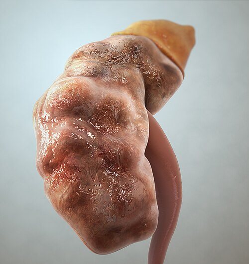

Gagal Ginjal (Ginjal)
Kondisi ketika ginjal kehilangan kemampuan untuk menyaring zat sisa metabolisme dari darah. Hal ini menyebabkan penumpukan racun dalam tubuh. Gagal ginjal bisa bersifat akut (terjadi tiba-tiba) atau kronis (berlangsung lama).

sumber: https://www.rsmaguanhusada.com/2018/11/08/gagal-ginjal/